Research Work
ELISE: A Reinforcement Learning Framework to Optimize the Sloftframe Size of TSCH in SDN-Based IoT Networks
Embedded Systems Engineering (ESE) section
Technical University of Denmark - DTU
github.com/fdojurado
Presentation outline
Research objectives (ROs)
- To develop a framework that enables centralized network resource management and run-time reconfiguration of IoT network.
- To develop a reinforcement learning (RL) solution that leverage the framework to dynamically adapt the network reliability, power efficiency, and delay of the WSN giving a set of user requirements.
- To design a reward model based on a multi-objective function that enables the selection of the optimal slotframe size given a set of user requirements.
Reprogrammable IoT network
To enable runtime network resource management, we have defined four main network functions.
- Neighbor Discovery (ND): This packet discover other sensor devices in the sender transmission range. It also allows to discover neighbors with path to the controller.
- Neighbor Advertisement (NA): This packet sends messages to report their own and their neighbors' status to the controller including the current power consumption, rank (# hops to the controller), and links to neighbors.
- Network configuration - TSCH schedules: This is a control packet to stablish the upcoming TSCH schedule (Tx, Rx timeslots and channels) for all \(n\in N\). Where \(N\) is the number of sensor nodes in the network.
- Network configuration - Routes: This is a control packet to stablish the upcoming forwarding paths for all \(n\in N\).
Introduction to TSCH
Time Slotted Channel Hopping (TSCH) is a MAC protocol that uses time synchronization to schedule communication in time-slots. It is based on the IEEE 802.15.4e standard.
TSCH is a deterministic protocol that provides high reliability and low power consumption. However, its performance largely depends on the TSCH schedule.
TSCH schedule
TSCH schedule is a set of time-slots that are assigned to each node in the network. Each time-slot is assigned to a specific channel and a specific node.
TSCH schedule is defined by the following parameters:
- Slotframe size (\(|C|\))
- Number of time-slots
- Number of channels
TSCH schedule example
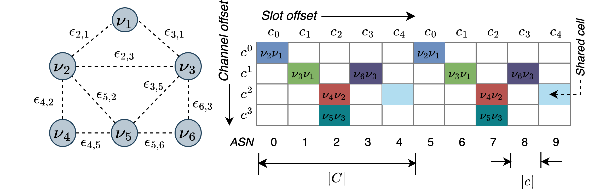Orchestra TSCH scheduler
Orchestra is an autonomous TSCH scheduler. It runs without any central scheduling entity nor negotiation. The key idea is to provision a set of slots for different traffic planes, and to define the slots in such a way that they can be automatically installed/removed as the RPL topology evolves.
Orchestra mainly uses three slotframes in its default configuration: time source, unicast, and default. The time source is used to sync the node with its parent. The default slotframe is used for any other traffic than time source and unicast messages.
Introduction to Reinforcement Learning
Reinforcement Learning (RL) is a machine learning technique that enables an agent to learn through trial and error by interacting with its environment.
RL is composed of the following elements:
- Agent
- Environment
- State
- Action
- Reward
Agent
An agent is an entity that interacts with the environment. It is responsible for taking actions and learning from the environment.
Environment
An environment is the world in which the agent interacts. It is responsible for providing feedback to the agent.
State
A state is a representation of the environment at a given time. It is used by the agent to make decisions.
Action
An action is a decision made by the agent. It is used to change the state of the environment.
Reward
A reward is a feedback from the environment to the agent. It is used to evaluate the agent's actions.
ELISE System architecture
Unified Concepts:
- Wireless Sensor Networks (WSNs)
- Software-Defined Networking (SDN)
- Machine Learning (ML)
Architecture diagram
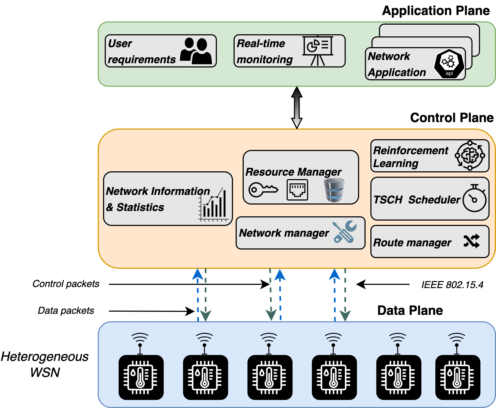TSCH slotframe design
We have defined four different slotframes to enable SDN concepts in the sensor network: time source, control plane, data plane, and default. The time source and default slotframes performs same tasks as Orchestra, whereas the control plane slotframe is used for all control traffic; TSCH schedules and routes configuration. Additionally, the data plane slotframe is used for data packets.
ELISE Reinforcement learning module
Recall aims of the RL module:
- To develop a reinforcement learning (RL) solution that leverage the framework to dynamically adapt the network reliability, power efficiency, and delay of the WSN giving a set of user requirements
- To design a reward model based on a multi-objective function that enables the selection of the optimal slotframe size given a set of user requirements
RL module diagram
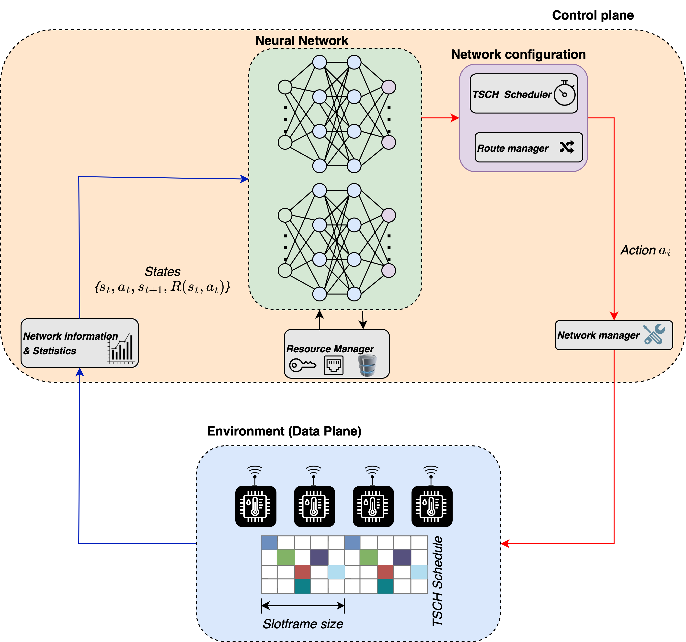ELISE follows the typical three-tier principles for SDWSNs, where the control plane layer collects data, orchestrates resources, performs intelligent calculations, and deploys new network configurations into sensor nodes.
State space
The state space (\(\mathcal{S}\)) is the set of all possible states that the agent can observe. It is defined by the following parameters:
- user requirements weights (\(\alpha\), \(\beta\), \(\gamma\)) which are user-defined coefficients for power consumption, delay, and reliability, respectively.
- power (p), delay (d) and packet delivery ratio (r).
- last active timeoffset in the schedule (\(\lambda\))
- the current slotframe size (\(|C|\))
Action space
The action space (\(\mathcal{A}\)) is the set of all possible actions that the agent can take. We have defined three possible actions:
\(\mathcal{A}= \begin{cases}\Uparrow |C|,\\ \Downarrow |C|,\\ |C|\end{cases}\)The upcoming slotframe size is then calculated as follows.
\( |C|^{DP} \triangleq \{a:gcd(a,|C|^{EB},|C|^{CP},|C|^{DF})=1\}\)
Where gcd represents the greatest common divisor, and \(|C|^{EB}\),\(|C|^{CP}\), and \(|C|^{DF}\) are the slotframe sizes of the EB, control, and default traffic planes.
Immediate Reward function
The reward function (\(\mathcal{R}\)) is a function that maps the state-action pair to a real number. It is used to evaluate the agent's actions.
We have defined the reward function as follows.
\(\mathcal{R}(s,a)=\begin{cases} -\mathcal{G}_{max}, \qquad if~|C|^{DP}\geq\mu~or~|C|^{DP}\leq\lambda \\ \Upsilon-\Omega, \qquad\qquad if~\lambda<|C|^{DP}<\mu \end{cases}\)
Where \(\mathcal{G}_{max} \)is the maximum penalty for taking an invalid slotframe size. \(\mu\) is the maximum slotframe size. $\Upsilon$ is a constant that makes sure the immediate reward stays always positive. $\Omega$ is the multi-objective cost function.
Multi-objective cost function
We have defined the multi-objective cost function as follows.
\(\Omega = \alpha \cdot \widetilde{p} + \beta \cdot \widetilde{d} + \gamma \cdot (1-\widetilde{r})\) subject to \(\alpha + \beta + \gamma = 1\) and \(\\0\le \alpha,\beta,\delta \le 1\)
Terminating conditions
These conditions state when a episode should end. We have defined three terminal conditions.
- Maximum number of iterations: episodes end when the maximum number of actions taken has been reached. The maximum number of iterations has to be greater than the iterations needed to reach the optimal state.
- Minimum slotframe size: episodes terminate early if the chosen slotframe size is below the minimum slotframe size of the TSCH schedule. This is a penalty for taking an action that misconfigures the network.
- Maximum slotframe size: episodes terminate early if the chosen slotframe size exceeds the maximum sloftframe size of the TSCH schedule. This is a penalty for taking an action with a large slotframe size that leads to a worse accumulative rewards, therefore minimizing the learning time of the DQN.
Results
We used M3 sensor nodes from the Grenoble site of the FIT IoT LAB. We have built a network of 10 sensor nodes with a maximum depth of 3 hops. The below figure shows the topology.
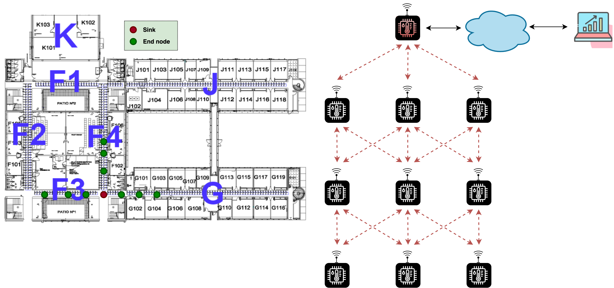Evaluation of ELISE
for different set of user requirements
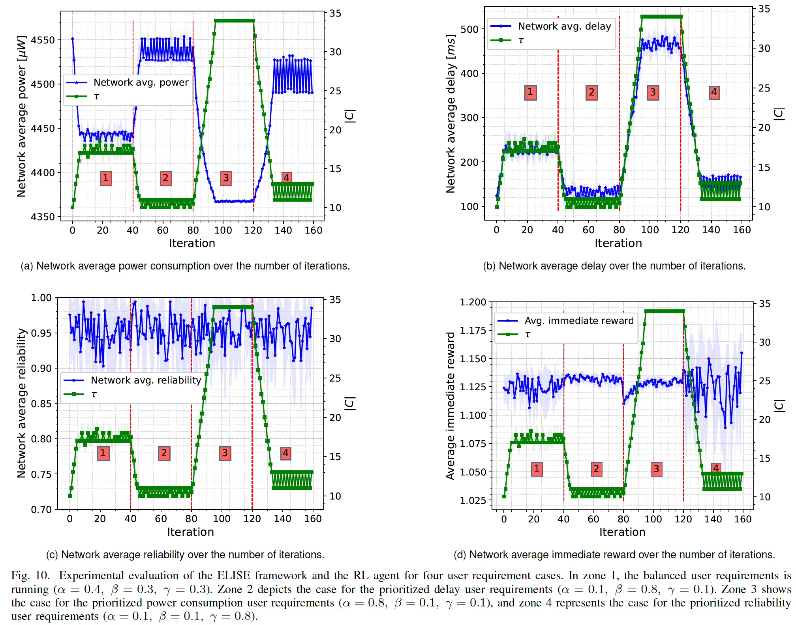Comparison of ELISE with Orchestra
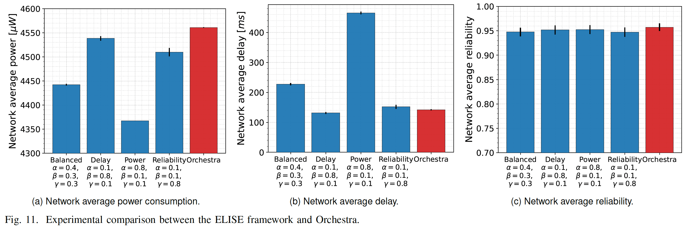Conclusion
- We have proposed ELISE, a novel RL-based approach for TSCH scheduling in IoT networks.
- We have shown that ELISE can satisfy different user requirements.
- We have shown that ELISE outperforms Orchestra in terms of power consumption and delay, and it still provides good performance in terms of reliability.
Future work
- We will extend ELISE to elaborate a TSCH schedule fully designed by the RL agent that self-adapts to the user requirements.
- We will extend ELISE to support mobility.
References
- Nguyen, Tri Gia, et al. Federated deep reinforcement learning for traffic monitoring in SDN-based IoT networks. IEEE Transactions on Cognitive Communications and Networking 7.4 (2021): 1048-1065.
- Duquennoy, Simon, et al. Orchestra: Robust mesh networks through autonomously scheduled TSCH. Proceedings of the 13th ACM conference on embedded networked sensor systems. 2015
Thank you
Thank you for your attention. I am open to any question.
Backup slides
Packet formats
Packet formats - Data packet
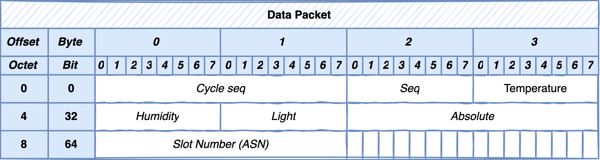Cycle seq, and seq are used by the RL module to keep track of the number of timesteps (action taken) taken and the number of data packets received during that timestep.
For this particular application, sensor nodes sample the temperature, humidity, and light from the environment.
The ASN is used to calculate the latency of the packet under the current network configuration (routes, TSCH schedules).
Packet formats - Neighbor Discovery (ND)
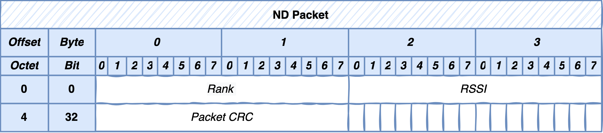The rank field states the rank of the sender. RSSI states the accumulate RSSI to the controller, and the packet CRC field is the checksum of the packet.
Packet formats - Neighbor Advertisement (NA)
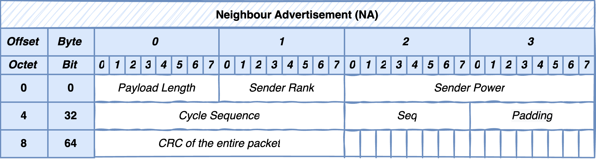The payload of the NA consist of the neighbors' address, RSSI and LQI values.
Packet formats - TSCH schedules
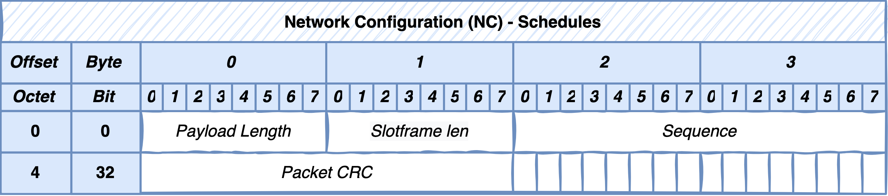All NC packets are sent as broadcast messages. The slotframe len field mandates the size of the slotframe of the TSCH schedules packed in the payload. The payload packet format is shown below.
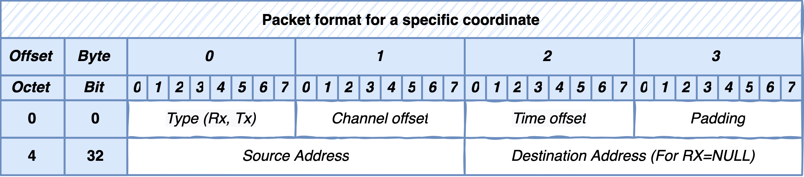The type field states the type of TSCH link; transmission or reception. Channel and timeslot offset specifies the coordinates of the given link. Source address indicates the sensor node who should process this payload. Lastly, the destination address is used for Tx links to set the neighbor address.
Packet formats - Routes

The packet header contains the payload length, sequence and checksum. The payload consists of source, destination, and neighbor addresses.
Power consumption calculations
Power consumption
We defined the network power consumption (\(\overline{P_N}\)) as the average power consumption of all sensor nodes. This is first calculated at each \(n\) \(\epsilon\) \(N\). The energy consumption \(E\) of sensor node \(n\) is calculated as follows.
| Symbol | Description |
|---|---|
| \(V\) | Operating voltage of the sensor node. |
| \(F\) | Set of sensor states (processing, low power mode, transmitting, listening, idle, etc.). |
| \(ts\) | Time spent in a particular sensor state. |
| \(i\) | Current draw in that particular sensor state. |
Then, the power consumption (\(P\)) of sensor node \(n\) is
We have set \(t_{sample}\) to 60 seconds.
Average power consumption
The average power consumption (\(\overline{P_{n}}\)) of sensor node \(n\), at sample time \(t\), is calculated using the Exponential Weighted Moving Average (EWMA) to smooth short-term fluctuations.
Where \(P_0\) is the initial power consumption and \(\gamma\) is the weighting smoothing factor (\(0\le \gamma \le 1\)).
From experimentation, we have set \(P_0\) to 1000 \(\mu W\) and \(\gamma\) to \(0.4\). Sensor nodes send the latest \(\overline{P_{n}}\) to the SDWSN controller.
Note: From the RL point of view, this approach mathematically does not forget previous values at each action; but the calculation is simple, whereas, if we do a window average, it does forget previous values but it requires a buffer implementation.
Average network power consumption
This is performed at the control plane. The controller retrieves, from the database, the latest power consumption (\(\overline{P_{n}}\)) samples from each \(n\) \(\epsilon\) \(N\).
It then calculates the overall network power consumption (\(\overline{P_N}\)) using the Weighted Arithmetic Mean (WAM). We use the WAM to account for small variations present at sensor nodes far from the controller.
Where \(\overline{p}\in \overline{P_n}\) and \(w \in W\) which is the set of weights.
Average network power consumption
The weight (\(w\)) is calculated using the rank and density of nodes in the neighborhood of sensor node as follows.
Where \(rank_n\) is the rank of sensor node \(n\), \(rank_N\) is the maximum rank in the network and \(nbr_n\) denotes the number of neighbors in sensor node \(n\).
Normalized average network power consumption
Finally, we rescale the power consumption to range from 0 to 1 using min-max normalization as follows.
Where, we set \(min(p)\) and \(max(P)\) to 0 and 3000 \(\mu W\) respectively.
Delay calculations
Delay
We have defined the network delay (\(\overline{D_N}\)) as the average time of data packets originated at sensor node \(n\) to reach the controller for all \(n\in N\).
In a TSCH network, a data packet delay of sensor \(n\) can be calculated as follows.
Where \(slot_{dur}>0\) refers to the length of a slot in a TSCH network. \(ASN_s\) and \(ASN_c\) are the Absolute Slot Number (ASN) at the time of the generation of the packet at the source and at the time of reception of the packet at the controller, respectively. Delay packets are processed when DATA packets are received.
Average delay per node
We calculate the average delay of sensor node (\(n\)) at timestep (\(t\)) as follows.
Where \(m>0\) and denotes the delay samples obtained during timestep \(t\).
Average network delay
We also use the WAM to calculate the overall network delay. This permits the controller to be sensitive to delay changes in sensor nodes close to the controller. We denote \(\overline{D_N}\) as the overall network delay.
The weight (\(w\)) is calculated per sensor node rank basis. The weight for sensor node \(n\) is calculated as follows.
The above equation puts more weight on sensor nodes close to the controller. The term \(rank_N+1\) assures that the weight is not zero for sensor nodes with the highest rank.
Normalized average network delay
Finally, we also use min-max normalization to rescale delay values from 0 to 1 as follows.
Where, we set \(min(D)\) to the minimum slot duration (10 ms for sky motes) and \(max(D)\) to 2500 ms (taken experimentally). \(max(D)\) can also be estimated in TSCH networks using the queue size, total number of hops, and the maximum of retransmission attempts.
Reliability calculations
Reliability
We defined the network reliability (\(\overline{R}\)) as the average Packet Delivery Ratio (PDR) of all sensor nodes. This PDR is taken from data packets using the sequence number. The reliability of sensor node \(n\) is calculated as follows.
Subject to \(Pkt_{n_{tx}}>0\). \(Pkt_{n_{rx}}\) and \(Pkt_{n_{tx}}\) are the number of received and transmitted packets, respectively.
Average reliability per node
The average PDR of sensor node \(n\), at sample time \(t\), is calculated as follows.
Where \(k>0\) and denotes the PDR samples obtained during timestep \(t\).
Average network reliability
We also use the WAM to calculate the overall network PDR. This permits the controller to be sensitive to PDR changes in sensor nodes fart from the controller. We denote \(\overline{R_N}\) as the overall network reliability.
The weight (\(w\)) is calculated per sensor node rank basis. The weight for sensor node \(n\) is calculated as follows.
No normalization is required as per definition PDR takes values from 0 to 1. Therefore,
Approximation model
SDWSN approximation model
Why? This is necessary because the training of the model requires to run multiple episodes. The number of episodes to learn to solve this particular problem is in the order of 100 thousand.
The main bottle neck when deploying the entire system (controller + network simulator) is the processing speed of Cooja. To complete one episode of 50 iterations requires approximately 10 mins. Therefore, this is not a suitable approach to train the model.
In contrast, if the TSCH network can be mathematically modeled in function of the slotframe size, the processing speed per episode can be significantly reduced. In fact, the model is able to solve the problem, while maximizing the accumulative reward in 20 mins (300k episodes).
This approximation model is also useful for hyperparameters tuning using Optuna, which takes around 10 hours.
The SDWSN approximation model
The main objective of the SDWSN approximation model is to estimate the values of the overall network power consumption (\(\widetilde{P_N}\)), delay (\(\widetilde{D_N}\)), and reliability (\(\widetilde{R_N}\)) when changing the slotframe size. Therefore, allowing to easily calculate the immediate reward of an action taken.
The values of \(\widetilde{P_N}\), \(\widetilde{D_N}\), and \(\widetilde{R_N}\) are estimated using the minimum mean square error (MMSE) estimator (\(E=\sum_{j=0}^{k}|p(x_j)-y_i|^2\)).
SDWSN approximation model - FIT IoT-LAB platform
We have selected 10 sensor nodes of the grenoble site of the FIT IoT-LAB. The location of the sensor nodes is shown below.
The obtain the values of \(\widetilde{P_N}\), \(\widetilde{D_N}\), and \(\widetilde{R_N}\) in function of the slotframe size, we program a simple task in the SDWSN controller. The controller, via the NC module, sends NC-TSCH packets with different slotframe sizes.
At each timestep, the controller selects a slotframe size \(s\in S\). Where \(S\) is the set of slotframe size numbers that are mutually prime to other slotframes. It repeats this process multiple times.
We then plot the values for \(\widetilde{P_N}\), \(\widetilde{D_N}\), and \(\widetilde{R_N}\) using the 95% confidence interval. We then find the vector coefficients \(v\) that minimizes the squared error in the degree order of three, three, and one for \(\widetilde{P_N}\), \(\widetilde{D_N}\), and \(\widetilde{R_N}\), respectively.
SDWSN approximation model - FIT IoT-LAB Network topology
We used M3 sensor nodes from the Grenoble site of the FIT IoT LAB. We have built a network of 10 sensor nodes with a maximum depth of 3 hops. The below figure shows the topology.
SDWSN approximation model - FIT IoT-LAB platform
Figures below show the values obtain during the experimentation, and the vector coefficients for all three performance metrics. Data was collected by injecting a range mutually prime slotframe sizes, from the smallest to the largest, and plotting the normalized values for the power, delay and reliability metrics.